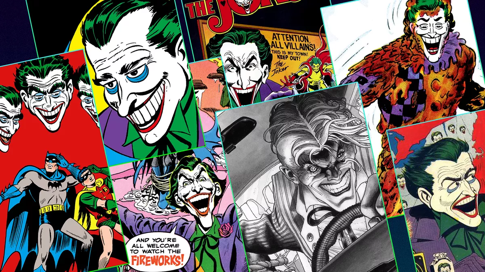
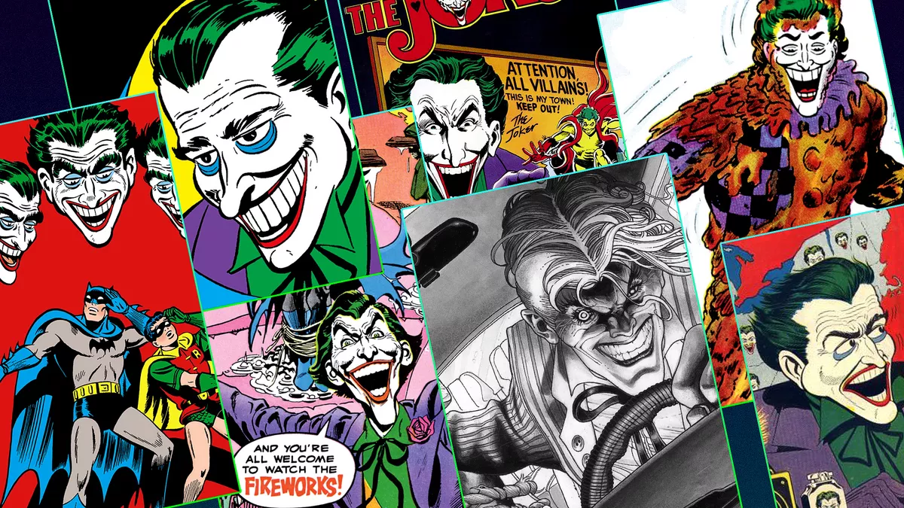

T
H
E
J
O
K
E
R
HOME
The Joker is a homicidal maniac and the archenemy of Batman. His real name and origin are unknown, but one of the most common versions indicates that he fell into a vat of chemicals which turned his skin white and his hair green. Completely unpredictable with no regard for human life, the Joker finds murder and mayhem funny, and is perhaps the most dangerous man on Earth with a body count stretching into the thousands, all centered around his obsession with the Batman.
 

Famous Actors

Jared Leto : Jared Leto's Joker is one that is as much a departure from Ledger as Ledger was from Nicholson. Every bit resistant to the “classic” iconography of the Clown Prince of Crime as Nolan’s take—perhaps even more so despite having bleached skin—director David Ayer and Leto created a virile Joker who is excessively fabulous and obsessed with embracing “thug life” stereotypes.
Jack Nicholson : Jack Nicholson was famously tapped for the Joker in Tim Burton’s dark reimagining of the Batman mythos. For its time, Batman was an ambitious blockbuster spectacle, and even today has a unique individual identity thanks to its director, making it an aberration in its then-nascent genre. Presumably, casting everyone’s favorite choice for the role went a long way to giving Burton some latitude.
Heath Ledger : no matter how much stock you put in comic book fidelity, there is little debate that Heath Ledger’s take on the Joker in 2008’s The Dark Knight transcends its genre. As much as any other legendary turn of villainy in cinema, Ledger’s take on the clown is immortal and still lingers in the culture to this day.

Joaquin Phoenix : As the only Joker to get a whole movie to himself, no Batmans or Suicide Squads required, Phoenix stars in a deconstructionist piece set in the early 1980s instead of 2019. Returning to the amateurish appearance of self-applied make-up used by Ledger, there is something even more insidious in Phoenix's countenance that just as much resembles serial killer John Wayne Gacy as it does the comic book character.